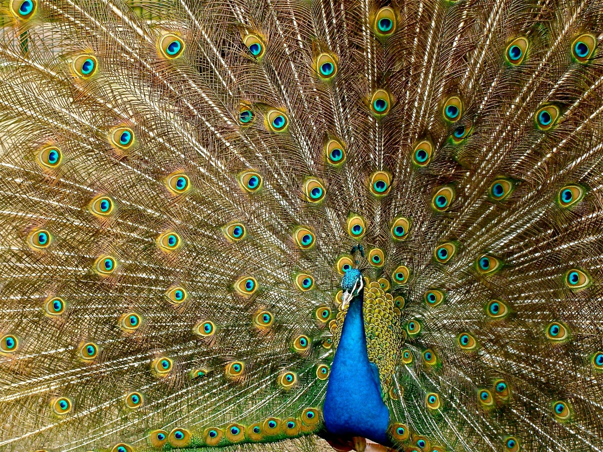

PEACOCK
Peacocks are actually the males of a species called peafowl, which
are native to Asian forests. Peafowl are a type of pheasant and are
capable of flight. Female peafowl, called peahens, have brown
feathers and shorter tails, which camouflage them and help them fly
more easily than males.
TIGER
The tiger (Panthera tigris) is the largest living cat species and a
member of the genus Panthera. It is most recognisable for its dark
vertical stripes on orange fur with a white underside. An apex
predator, it primarily preys on ungulates such as deer and wild
boar. It is territorial and generally a social predator.
HORNBILL BIRD
Hornbills (Bucerotidae) are a family of bird found in tropical and
subtropical Africa, Asia and Melanesia. They are characterized by a
long, down-curved bill which is frequently brightly coloured and
sometimes has a casque on the upper mandible. Both the common
English and the scientific name of the family refer to the shape of
the bill